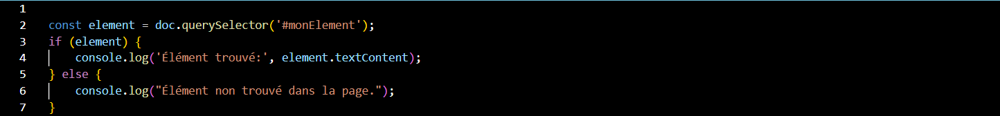
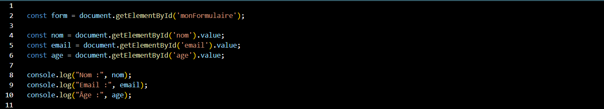

Certification JS
Certification JS
Dans cette formation, j'ai appris comment utiliser Javascript, un langage de programmation de scripts principalement employé dans les pages web interactives.
Lien internet : Open Classrooms Javascript
JavaScript propose tout un éventail de méthodes pour récupérer les éléments d'une page html :getElementById (avec l'id de l'élément) querySelector (avec les sélecteurs CSS);querySelectorAll (idem mais avec tous ceux qui ont les même sélecteurs CSS).

Un Object (objet, en français) JavaScript est un conteneur. Il est composé de propriétés qui ont chacune une valeur.
Le type de donnée Object offre la possibilité de stocker plusieurs valeurs en une seule fois, plutôt que de devoir stocker séparément nos valeurs dans plusieurs variables différentes.
Pour récupérer la valeur d'un champ d'un formulaire, il faut récupérer l'élément de la page correspondant puis prendre sa valeur.
